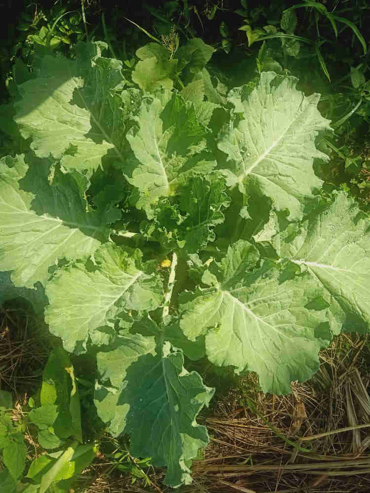
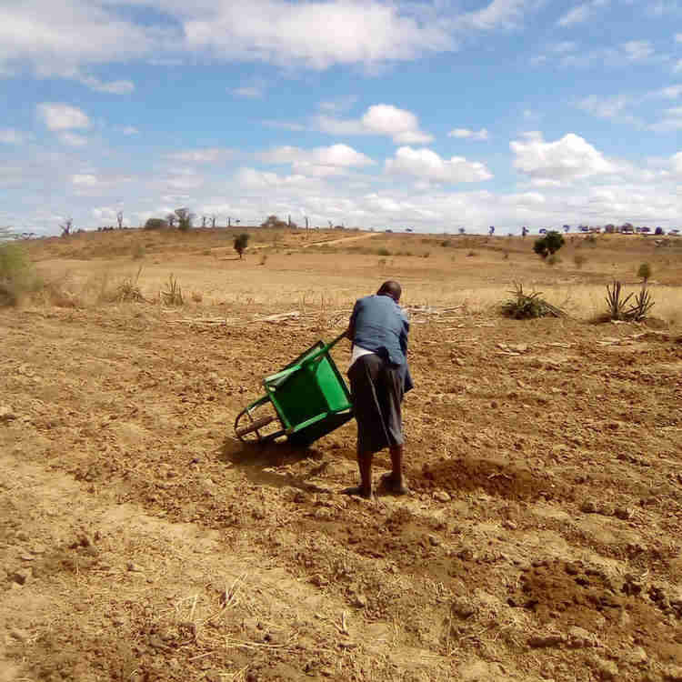
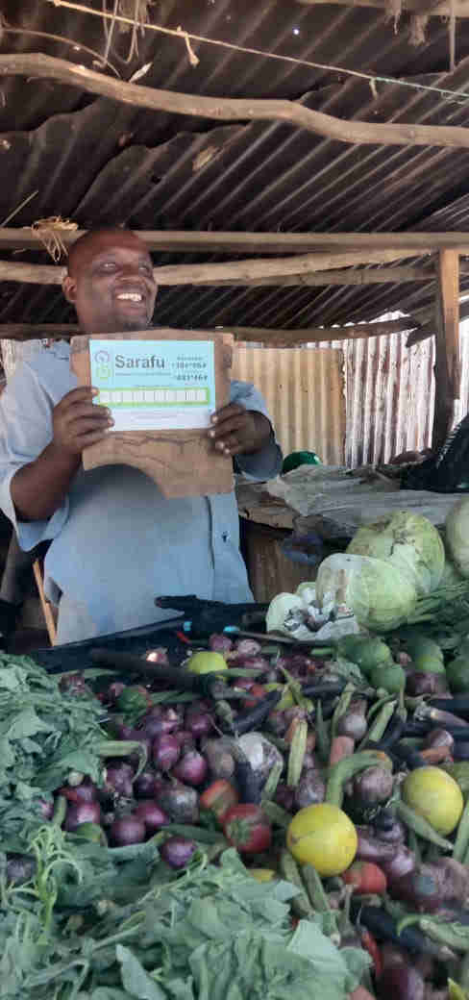
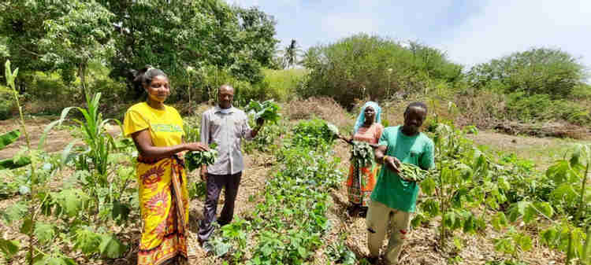
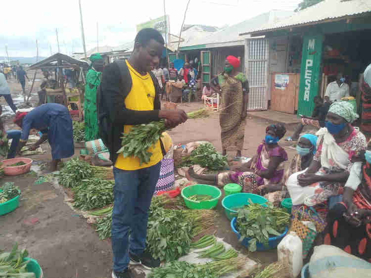
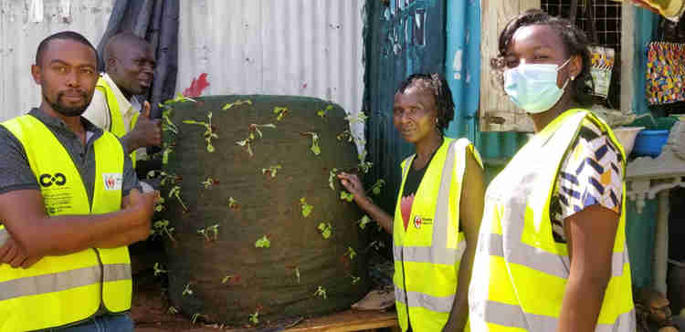
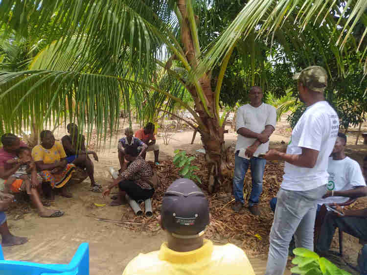
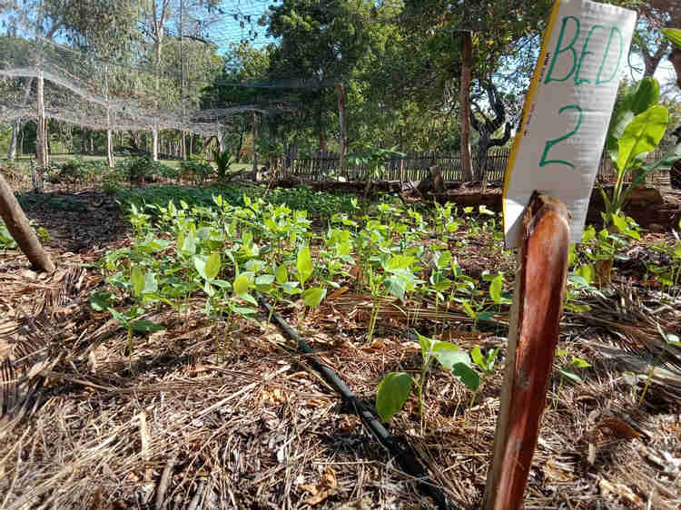
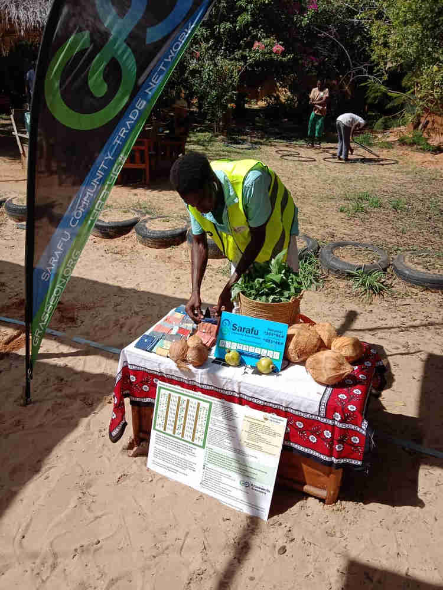

From Mustard Seeds to Food Forests: A Regenerative Journey
We've been blessed by an opportunity from Mustard Seed Trust to support 50 acres of Syntropic Agriculture paired with Community Currencies in Kenya. We are learning from 50 community groups that use a community currency to sell produce and pay for the labor intensive setup, inputs and maintenance of one acre community farms (Shamba ya Jamii). The Shamba ya Jamii design was imported from Curadao (thanks to Curadao) and contextualized by Roland Van Reenen and James Thiong'o and hundreds of local farmers.
"Regenerative agricultural techniques/tools have the potential to feed an entire nation without the political and social-economic strains that farmers currently undergo. We’re encouraging local community groups in the arid and semi-arid coastal regions to join the Shamba ya Jamii (Community Carm) Movement so as to build a sustainable ecological and economic future. " - Isavary Khabuqwi
Below are a few inspiring excerpts of what has been accomplished so far by Grassroots Economics' support engineers in rural Nyanza, Kwale and Kakuma Refugee Camp, Watamu, Kilifi as well as urban Nairobi

Syntropic Siaya by Janet Akinyi
The destruction and loss of indigenous ecosystems is a major challenge affecting areas across the Lake Victoria Region and the drought stricken areas in Kenya. The Nyalgunga Farmers Group and Kwe Kende Group in Nyalgunga Village, North Alego ward, Alego Usonga Constituency, Siaya County are among the privileged groups across Kenya that have been trained and empowered on Syntropic Agroforestry- a system that regenerates soil and provides long term food forest.
Syntropic agroforestry is all about creating resilient food producing ecosystems. An holistic worldview in which pests or diseases are seen as agents of the department of optimization of life processes and therefore part of the ecosystem. It discourages the usual practice of mono cropping of maize or beans which has been a norm in these areas to a food forest filled with different indigenous crops and fruit trees by placing the elements that will change the place in a cool,green and lush food producing oasis. It helps in regenerating soil and developing sustainable fertile crops.
This system involves planting of different types of crops and fruit trees separated in treelines, paths, vegetable beds and biomass beds. The following guiding principles are encouraged in Syntropic Agroforestry: Mulching, Maximizing photosynthesis (layering plants and dense inter-cropping), Good management and Plants succession. Sarafu poster and placard in one of the farms.
The two groups from Siaya, having been trained in January 2021, are excited by how well their crops are currently doing. The community uses Community Inclusion Currency (CIC) to maintain and develop their farms among other uses that include covering their basic needs, maximizing resources and braiding as users trade in food, services, medical needs, education among other needs are grateful that this system was introduced to them.
They’ve had two harvests since the set up of their farms. The good thing about Syntropic agroforestry is that it guarantees sustainable harvests from a few weeks through to at least 20-30 years without tilling and with low maintenance. They are therefore sure of sustainable food production in their community. This not only has a positive impact on the members of these two groups but also to the community at large. They are no longer worried about vegetables as they can easily get them from their farms.
Healthy organic Kales ready for harvesting.
The community members have started harvesting food from their farms that they are able to buy and sell using Sarafu (community Currency). Other community members who are not part of these two groups but are using Community Inclusion Currency are also able to buy food from the two farms.
Syntropic Kwale by Amina Godana
8 years ago the World Food Program had initiated a project in Kwale County that is PRRO (Protracted Relief Recovery Operation which was aimed for asset creation in the region under Kenyan Red Cross who were the implementing partners. They had different activities,
- Excavation of water pans
- Agriculture
- Fish ponds
- Goat pens.
In the agriculture sector they had introduced sunken beds where they planted vegetables which was not quite easy to set up and also during high rainfall it was quite a challenge because it flooded and ruined the plants.
This whole project was however short lived this was because the community members did not own the project since they were mostly focused on the cash that they were receiving, this made them dependent on it and forgot about the project. So when the cash ended so did most of the program.
The best thing about practicing Syntropic Agroforestry is that everything in the farm is useful.
- Some weeds keep off pests and diseases.
- Companion planting of plants which are beneficial to each other optimises the use of space,sunlight and nutrient cycle.
- Permanent soil cover with mulch prevents soil erosion and provides nutrients for the plants when they decay.
- Pruning the matured plants increases the amount of sunlight for other plants.
Migunani A, Madewani, Yowani and Chikole are some of the many chamas in Kwale County that have embraced the new form of farming. It's a new concept in the area which makes them so eager to see if it actually works. Food insecurity in the area was the main reason as to why they wholeheartedly embraced the syntropic agroforestry this is because it involves planting of different types of crops on the same piece of land being that some crops mature earlier than others this means they will be harvesting almost all the time and do replanting the issue of lack of food will be sorted!
Members of the mentioned chamas received soil quality testing, training and constant visits by the field officers to ensure they do not have any problems in regards to the farming.The main aim of practicing syntropic agroforestry in the area is to help, educate, feed and regenerate the soil for the next generation.
Simba Ndoro works on Chikole farm and is paid using Sarafu. This is hard work and no one has enough Kenyan Shillings to pay Simba or the thousands of other farmers to regernate the soil. They can fund themselves!
Simba Ndoro Simba is a member of Chikole group who works on the shamba ya jamii four days a week and gets paid 200 per day a total of 800 sarafu. He uses the Sarafu to buy fish from Nzadze Bora and also makes his weekly savings in his chama. He is grateful for the introduction of the syntropic agroforestry it has created a source of income for him during this difficult time and also has easen saving in the chama which is used to support other projects.
Shadrack Tsuma a member of madewani group works on the farm and gets paid 300 sarafu a day. He normally spends his Sarafu on Rutuba Mwanzije by buying groceries from him and in turn Rutuba buys shoes from him using sarafu. Rutuba Mwanzije also spends sarafu that he gets from working on the shamba ya jamii to buy his groceries from Abubakar Mwero who is a farmer.
Rutuba Mwanzije at his grocery kiosk.
Miyani Fdp which is run by the field officers in kinango county was the first demo farm to be setup this was to serve as a trial in the area and see if the practice is possible and this has gave the other chamas in the same area the positivity in practising the same. The chama sells its produce to the people around miyani and also pays its workers using sarafu.
Members buying first produce from their farm.
Syntropic Kakuma Refugee Camp by Marcelin Petro
FARMING AND HEALTH EDUCATION is a community based organization that deal with agroforestry and Sarafu (community Currency) in Kakuma refugee camp with the aim of eradicating hanger in kakuma refugee camp. More than 206,458 refugee are living in Kakuma refugee camp (on average more than 10 years) that are divided into 15 nationalities. A great number of people (refugees) are depending on the World Food Program (WFP) to be supported by being getting food at the 3 distribution centers in each and every month. Due to the high number of population, some do miss there food. WFP has manage to give ration cards to each refugee for better accounting, this means that when you lose your rational card you lose your monthly food and stay without food until the other coming month.
From WFP each family can get one and some type of grain every month (3kg to 4kg) and 1litter of cooking oil. Through LWF and WORLD VISION are also helping us by doing the provision of that food. We have more than 5,000 malnutrition children and malnourished pregnant mothers who are more affected in Kakuma refugee camp. Due to this, Farming and Healthy Education community based organization is working with Syntropic Agroforestry and COmmunity CUrrency (Sarafu) to full this gap by teaching and growing our own fresh food in Kakuma refugee camp!
Instead of waiting to be given food at the end of the month it's better to plant even just a kitchen gardens for the families while waiting for the monthly food distribution <instead of giving money better you teach me how to make our own money>.
Here I am proudly buying local food with local currency and not waiting for WFP handouts.
Urban Gardens in Nairobi by Sylvia Karanja
Joyce is a Mother of 3, she has a beadwork shop in Kamongo, Mukuru Kayaba, Nairobi. She’s one of many in Kayaba slum that understands the hustle and bustle of urban life to afford a daily meal. For the love of her community in terms of empowerment, she has worked with many projects through Red Cross as a community volunteer. This has helped her in gaining trust with community members and act as a role model to many.
With as many of the projects she has worked with, Joyce joined Sarafu network in 2019 and since then she has created a trading network and enrolled her community members in the network to boost their economy. Her group is one of the beneficiaries that have received training and materials for the Urban Farming project. She tells her story of how they moved to Kayaba in the 1980s, when her mother was looking for a job. The mother got a space to put up a small restaurant where she could sell food to those who worked in the industries then. Since she was used to farming back at the village, she later saw an opportunity of an empty space that used to be a railway gauge and it was not in use. She decided to get a permit from the mayor and till now she does farming on that space. That's how Joyce learnt and grew her passion in farming.
Given the opportunity they received as a group from Grassroots Economics,this Farming project has given her and the group members new skills that they could utilize small spaces they have and provide food for their families.
James Thiong'o, Joyce and myself (Sylvia Karanja shown below)
Syntropic Watamu, Kilifi by Emmanuel Mbui
Now, in another new community, Gede, Watamu Community, through Mohamed, a farmer in Gede who introduced Sarafu credit to his Group;(Watamu Reef Welfare Group). Apart from benefiting from circulating community currency, their neighbours are also going to enjoy the syntropic farm products.
Watamu Reef Welfare Group trained on the Syntropic agriculture at their Shamba.
Members of the Watamu Reef Welfare Group are planting fruits trees in the prepared land. They also have the footpath done in coconuts husks. A few crops have been planted as they wait for others to be transplanted from their seedbed.
Syntropic Kilifi by Isavary Khabuqwi
Sue's farm is the epitome of Syntropic Agroforestry in Kilifi County with a full drip irrigation system. It is through this initiative that we are looking at a future where everyone can access food through the acceptance of community driven basic income, as the produce from the farm is being sold in Sarafu to the local market.
The purpose of this ‘Shamba ya Jamii’ is to help teach and feed our neighbors and community and regenerate soil for future generations. Mulching (growing grasses and cutting them), and intensive mixed planting can make our soil more productive and healthy. With the help of our permaculture expert James Thion’go, the farm is designed in a way that creates a favorable environmental conditions for the chosen crops that include tomatoes, pigweed (better known as kunde), okra, eggplants, capsicum and mchicha. These chosen sets of vegetables have the advantage of taking only up to 3 months before harvesting and they don’t need irrigation all year round.
According to our beloved and passionate Kilifi Agronomist Eck Volkmann, "When getting into farming keep in mind that in 3 years it is guaranteed that your crops will be destroyed due to a drought and/or flooding, but with proper farming techniques, consistency in planning, and willingness to experiment any farm can keep feeding generations to come." Some of the farming tips that our discussions yielded included the fact that basil can be grown in the same bed as tomatoes to help manage pests. They grow like weeds and their oil and intense scent helps deter common pests. Eck is also supplying Sue's farm with amazing Biochar!
Emmanuel Kahindi is the farm manager as Sue's and is also teaching other groups how to do the same while selling produce using Community Currency - pictured here at Distant Relatives ' May Fair.
Sue’s farm is looking to upgrade its production capacity by adding more crop options such as watermelon and basil following soil analysis. One of the project members plans to donate basil seeds from Muzambara mountains in Tanzania as a way of trying out new varieties.
I hope you are inspired to setup your own Shamba Ya Jamii!